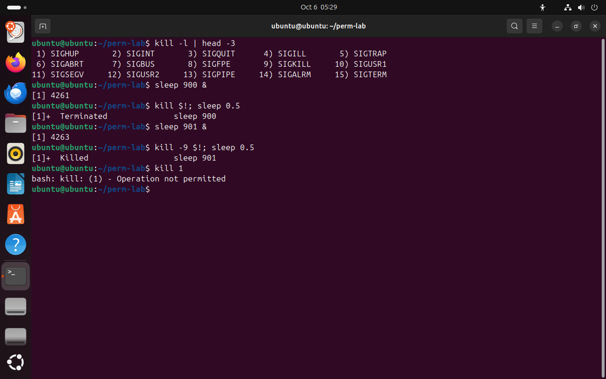
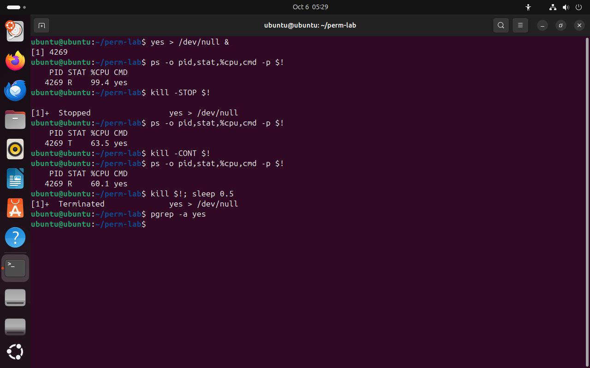
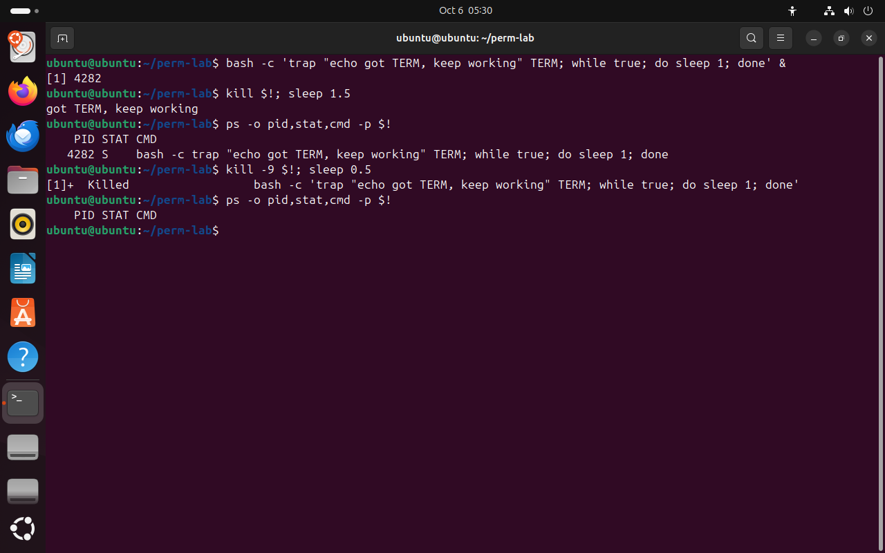

Часть 5 из 7
Сигналы: kill, остановка и продолжение
В этой части разберём, что такое сигнал, какие сигналы нужны администратору, как посылать их командой kill и почему процесс может перехватить TERM, но не KILL.
5.1 Что такое сигнал
Сигнал — короткое уведомление, которое ядро доставляет процессу. У сигнала нет содержимого, только номер и имя. Получив сигнал, процесс выполняет действие по умолчанию для этого сигнала: завершается, останавливается или продолжает работу. Программа может заранее назначить свой обработчик — тогда вместо действия по умолчанию выполняется её код. Исключение — сигналы KILL и STOP: их перехватить нельзя, ядро выполняет их само.
Сигналы похожи на сигналы светофора и регулировщика для водителя. Жёлтый свет (TERM) — просьба остановиться: водитель сам решает, как плавно затормозить, и может доехать до перекрёстка. Перекрытая шлагбаумом дорога (KILL) — выбора нет. Жест «стой» и «проезжай» (STOP и CONT) — пауза и продолжение движения без съезда с дороги.
| Сигнал | Номер | Кто посылает | Действие по умолчанию |
|---|---|---|---|
HUP | 1 | терминал при закрытии окна | завершить; службы часто перечитывают по нему настройки |
INT | 2 | Ctrl+C | прервать процесс |
KILL | 9 | kill -9 | завершить немедленно; перехватить нельзя |
TERM | 15 | kill без ключа | завершить; программа может сначала сохранить данные |
CONT | 18 | kill -CONT, fg, bg | продолжить остановленный процесс |
STOP | 19 | kill -STOP | остановить; перехватить нельзя |
TSTP | 20 | Ctrl+Z | остановить; программа может перехватить |
Номера 18, 19 и 20 верны для Linux на процессорах x86 и ARM, на некоторых других архитектурах они другие. Поэтому в командах сигналы пишут по имени: kill -STOP работает везде.
5.2 Команда kill
Команда kill PID посылает процессу сигнал TERM. С ключом посылается другой сигнал: kill -9 PID или kill -KILL PID, kill -STOP PID. Вместо PID можно указать номер задания: kill %1. Команда kill -l выводит список всех сигналов с номерами.
Посылать сигналы можно только своим процессам; процессам других пользователей — только root. Поэтому kill 1 от имени ubuntu завершается ошибкой Operation not permitted.
Порядок завершения программы такой: сначала TERM, несколько секунд ожидания, и только если процесс не завершился — KILL. Программа, получившая TERM, успевает записать данные на диск, закрыть соединения и удалить временные файлы. KILL снимает процесс сразу: незаписанные данные теряются, временные файлы остаются.
kill -l | head -3# первые 15 сигналовчто делает
Что делает команда. Выводит первые три строки списка сигналов: сигналы 1–15 с номерами.
По частям:
kill- послать процессу сигнал
-l- вывести список сигналов с номерами
|- передать вывод левой команды на вход следующей
head- оставить только первые строки
-3- сколько первых строк оставить: 3
sleep 900 &что делает
Что делает команда. Запускает в фоне процесс для опыта с TERM.
По частям:
sleep- ничего не делать указанное число секунд
900- сколько секунд
&- запустить команду слева в фоне и сразу продолжить
kill $!; sleep 0.5# TERMчто делает
Что делает команда. Посылает последнему фоновому процессу TERM и полсекунды ждёт, чтобы оболочка успела сообщить о завершении.
По частям:
kill- послать процессу сигнал
$!- какому процессу, PID последнего процесса, запущенного в фоне
;- разделитель: выполнить следующую команду после этой
sleep- ничего не делать указанное число секунд
0.5- сколько секунд
sleep 901 &что делает
Что делает команда. Запускает в фоне процесс для опыта с KILL.
По частям:
sleep- ничего не делать указанное число секунд
901- сколько секунд
&- запустить команду слева в фоне и сразу продолжить
kill -9 $!; sleep 0.5# KILLчто делает
Что делает команда. Посылает последнему фоновому процессу KILL и полсекунды ждёт.
По частям:
kill- послать процессу сигнал
-9- послать сигнал 9 — KILL: завершить немедленно
$!- какому процессу, PID последнего процесса, запущенного в фоне
;- разделитель: выполнить следующую команду после этой
sleep- ничего не делать указанное число секунд
0.5- сколько секунд
kill 1# процесс rootчто делает
Что делает команда. Пытается послать TERM процессу с PID 1, который принадлежит root.
По частям:
kill- послать процессу сигнал
1- какому процессу, PID 1 — первый процесс системы, systemd
- 19 — KILL
- 215 — TERM
- 3TERM: процесс завершён
- 4KILL: процесс снят
- 5процессы других пользователей недоступны


Весь снимок ↗Список сигналов, завершение сигналами TERM и KILL, отказ для чужого процесса.
Что показывает снимок. kill -l выводит сигналы с номерами: 9 — KILL, 15 — TERM; после TERM оболочка сообщила Terminated, после KILL — Killed; процесс root обычному пользователю недоступен.
Где это пригодится. Зависшую программу завершают сначала командой kill без ключа и только если она не реагирует — kill -9.
5.3 Остановка и продолжение
kill -STOP останавливает процесс так же, как Ctrl+Z, но работает для любого своего процесса, в том числе запущенного в фоне или из другого терминала. kill -CONT продолжает его. Так приостанавливают программу, которая заняла процессор, чтобы разобраться, что с ней, и не потерять её работу.
Столбец %CPU в ps показывает среднюю загрузку за всё время жизни процесса: процессорное время, делённое на время работы. Поэтому у только что остановленного процесса %CPU уменьшается постепенно.
yes > /dev/null &# процесс, занимающий процессорчто делает
Что делает команда. Запускает в фоне процесс, который бесконечно пишет строку y в устройство-«корзину»; он всё время занят.
По частям:
yes- бесконечно печатать строку y
>- записать вывод в файл
/dev/null- устройство, которое выбрасывает всё записанное
&- запустить команду слева в фоне и сразу продолжить
ps -o pid,stat,%cpu,cmd -p $!что делает
Что делает команда. Выводит номер, состояние, загрузку процессора и команду последнего фонового процесса.
По частям:
ps- вывести сведения о процессах
-o pid,stat,%cpu,cmd- выводить столбцы pid,stat,%cpu,cmd
-p $!- выбрать процесс с PID $!
kill -STOP $!# остановитьчто делает
Что делает команда. Останавливает последний фоновый процесс.
По частям:
kill- послать процессу сигнал
-STOP- послать сигнал STOP: остановить процесс
$!- какому процессу, PID последнего процесса, запущенного в фоне
ps -o pid,stat,%cpu,cmd -p $!что делает
Что делает команда. Выводит номер, состояние, загрузку процессора и команду последнего фонового процесса.
По частям:
ps- вывести сведения о процессах
-o pid,stat,%cpu,cmd- выводить столбцы pid,stat,%cpu,cmd
-p $!- выбрать процесс с PID $!
kill -CONT $!# продолжитьчто делает
Что делает команда. Продолжает остановленный процесс.
По частям:
kill- послать процессу сигнал
-CONT- послать сигнал CONT: продолжить остановленный процесс
$!- какому процессу, PID последнего процесса, запущенного в фоне
ps -o pid,stat,%cpu,cmd -p $!что делает
Что делает команда. Выводит номер, состояние, загрузку процессора и команду последнего фонового процесса.
По частям:
ps- вывести сведения о процессах
-o pid,stat,%cpu,cmd- выводить столбцы pid,stat,%cpu,cmd
-p $!- выбрать процесс с PID $!
kill $!; sleep 0.5# завершитьчто делает
Что делает команда. Посылает последнему фоновому процессу TERM и полсекунды ждёт, чтобы оболочка успела сообщить о завершении.
По частям:
kill- послать процессу сигнал
$!- какому процессу, PID последнего процесса, запущенного в фоне
;- разделитель: выполнить следующую команду после этой
sleep- ничего не делать указанное число секунд
0.5- сколько секунд
pgrep -a yes# процесса нетчто делает
Что делает команда. Ищет процессы yes; пустой вывод — процессов нет.
По частям:
pgrep- найти процессы и вывести их PID
-a- выводить вместе с PID командную строку
yes- образец имени
- 1R: yes занимает процессор
- 2оболочка заметила остановку своего задания
- 3T: остановлен; %CPU — среднее за жизнь, падает постепенно
- 4R: продолжил работу после CONT
- 5TERM завершил процесс


Весь снимок ↗Процесс yes в состояниях R, T и снова R.
Что показывает снимок. yes в состоянии R занимал 99 % процессора, после STOP стал T, после CONT снова R; %CPU снижается постепенно, потому что считается за всё время жизни.
Где это пригодится. STOP приостанавливает тяжёлую задачу, например резервное копирование в рабочее время, а CONT продолжает её без потери сделанного.
5.4 Процесс перехватывает TERM
Обработчик сигнала в bash задаёт встроенная команда trap: trap "команды" TERM выполняет команды при получении TERM вместо завершения. В опыте процесс на TERM печатает сообщение и продолжает работать. Против KILL обработчик не помогает: этот сигнал до процесса не доходит, ядро снимает процесс само.
Так устроены службы: на TERM веб-сервер дорабатывает текущие запросы и только потом выходит, база данных записывает данные на диск. Если служба зависла и на TERM не реагирует, администратор через несколько секунд посылает KILL.
bash -c 'trap "echo got TERM, keep working" TERM; while true; do sleep 1; done' &# перехватывает TERMчто делает
Что делает команда. Запускает в фоне оболочку с обработчиком TERM: на TERM она печатает строку и работает дальше.
По частям:
bash -c '…'- запустить bash и выполнить команды из строки
trap "echo got TERM, keep working" TERM- обработчик: при сигнале TERM напечатать строку и продолжить работу
while true; do sleep 1; done- бесконечный цикл: спать по секунде
&- запустить в фоне
kill $!; sleep 1.5# TERMчто делает
Что делает команда. Посылает TERM и ждёт полторы секунды, чтобы обработчик успел сработать.
По частям:
kill- послать процессу сигнал
$!- какому процессу, PID последнего процесса, запущенного в фоне
;- разделитель: выполнить следующую команду после этой
sleep- ничего не делать указанное число секунд
1.5- сколько секунд
ps -o pid,stat,cmd -p $!# процесс живчто делает
Что делает команда. Выводит номер, состояние и команду последнего фонового процесса, если он ещё есть.
По частям:
ps- вывести сведения о процессах
-o pid,stat,cmd- выводить столбцы pid,stat,cmd
-p $!- выбрать процесс с PID $!
kill -9 $!; sleep 0.5# KILLчто делает
Что делает команда. Посылает последнему фоновому процессу KILL и полсекунды ждёт.
По частям:
kill- послать процессу сигнал
-9- послать сигнал 9 — KILL: завершить немедленно
$!- какому процессу, PID последнего процесса, запущенного в фоне
;- разделитель: выполнить следующую команду после этой
sleep- ничего не делать указанное число секунд
0.5- сколько секунд
ps -o pid,stat,cmd -p $!# процесса нетчто делает
Что делает команда. Выводит номер, состояние и команду последнего фонового процесса, если он ещё есть.
По частям:
ps- вывести сведения о процессах
-o pid,stat,cmd- выводить столбцы pid,stat,cmd
-p $!- выбрать процесс с PID $!
- 1обработчик TERM выполнен, процесс работает дальше
- 2процесс жив после TERM
- 3KILL перехватить нельзя
- 4процесса больше нет


Весь снимок ↗Процесс перехватывает TERM, но не KILL.
Что показывает снимок. На TERM процесс выполнил обработчик, напечатал строку и остался в состоянии S; KILL снял его, и ps больше ничего не находит.
Где это пригодится. Так ведут себя службы: на TERM аккуратно закрывают соединения и файлы. Если служба зависла и TERM не помог, администратор посылает KILL.
Для поиска процессов по имени есть пара команд: pgrep находит PID, pkill посылает сигнал всем найденным процессам. Ключ -f ищет образец во всей командной строке процесса, включая аргументы: pkill -f backup.sh завершит процесс bash backup.sh.
Итоги части 5
- Сигнал — уведомление процессу; на него процесс завершается, останавливается или выполняет свой обработчик.
kill PIDпосылает TERM,kill -9 PID— KILL,kill -STOPиkill -CONT— паузу и продолжение.- TERM программа может перехватить и завершиться аккуратно; KILL и STOP перехватить нельзя.
- Порядок завершения: TERM, ожидание, и только потом KILL.
- Своим процессам сигналы посылает пользователь, чужим — только root.
В отчётСнимок STOP и CONT и снимок с trap: почему процесс пережил TERM и не пережил KILL.